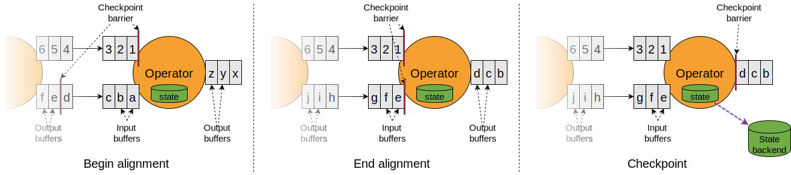

容错（Fault Tolerance via State Snapshots)
1、状态后端（State Backends）
Flink 管理的键控状态（keyed state）是一种分片的（sharded）键值（key/value）存储，键控状态的每个条目的运行中副本（working copy）保存在负责对应 key 的 taskmanger 的本地，算子状态对于需要它的机器来说也是本地的。
Flink 管理的状态存储在状态后端（state backend）中。有两种状态后端——一种是基于 RocksDB，即一个将运行中状态（working state）保存在磁盘上内置的键值存储；另一种是基于堆的（heap-based）状态后端，将运行中状态保存在内存的 Java heap 中。
| 名称 | 运行中状态（Working state） | 快照（Snapshotting） | 特点 |
|---|---|---|---|
| EmbeddedRocksDB StateBackend | 本地磁盘（tmp dir） | Full / Incremental | 支持比内存空间更大的状态 经验法则：比基于堆的状态后端慢 10x |
| HashMap StateBackend | JVM heap | Full | 快速，需要很大的堆内存 受限于 GC |
使用保存在基于堆的状态后端的状态时，访问和更新操作涉及到读写堆中的对象。但是对于保存在 EmbeddedRocksDBStateBackend 中的对象，访问和更新操作涉及到序列化和反序列化，因此开销更大（more expensvie）。但是，使用 RocksDB 时状态的量仅受限于本地磁盘的大小。还需要注意的是，只有 EmbeddedRocksDBStateBackend 可以进行增量的快照（Incremental snapshotting）——对于具有大量的缓慢变化状态的应用来说是一个显著的好处。
这两种状态后端都可以进行异步快照——即可以在不阻碍运行中的流处理的情况下进行快照。
2、检查点存储（Checkpoint Storage）
Flink 定期地对每个算子的所有状态进行持久化的快照，并且将这些快照复制到持久化的存储——比如分布式文件系统中。如果任务失败，Flink 可以恢复应用的完整状态，并且像没有任何错误一样地恢复（resume）处理。
快照的存储位置通过任务的检查点存储（checkpoint storage）来定义。有两种检查点存储——一种将状态快照持久化到分布式文件系统；另一种使用 JobManager 的堆。
| 名称 | 状态后端 | 特点 |
|---|---|---|
| FileSystemCheckpointStorage | 分布式文件系统 | 支持非常大的状态 高度持久 / 耐用（highly durable） 生产部署推荐使用 |
| JobManagerCheckpointStorage | JobManager JVM 堆 | 适用于测试和（本地的）用小的状态进行试验 |
3、状态快照（State Snapshots）
3.1、定义
- 快照（Snapshot）—— 一个通用术语，指 Flink Job 的全局的（global）、一致的（consitent）镜像（image）。一个快照包括了一个指向每个数据源的指针（比如，一个文件或者 Kafka 分区的偏移量）和 job 的每个算子的状态的拷贝——结果来自于从数据源的这些位置开始处理的全部事件。
- 检查点（Checkpoint）—— Flink 为了能够从错误中恢复而自动保存的一个快照。检查点可以是增量的，并且为了快速地恢复进行了优化。
- 外化检查点（Externalized Checkpoint）—— 通常检查点不是旨在由用户操纵的。在 job 运行中 Flink 只保留 n 个（n 可以配置）最近的检测点，当 job 被取消时会删除它们。但是，也可以配置检查点为保留的（job取消时，不被自动删除），这样就可以手动地从检查点恢复。
- 保存点（Savepoint）——由于某种操作目的（比如重新部署、升级、扩展）而由用户（或者一个 API 调用）手动地触发的快照。保存点总是完整的，并且为了操作上的灵活性进行了优化。
3.2、状态快照如何工作
Flink 使用一个 Chandy-Lamport 算法的变种——异步栅栏快照（asynchronous barrier snapshotting）。
当 task manager 被检查点协调器（checkpoint coordinator，job manager 的一部分）指示开始一个检查点，它会让所有的数据源记录它们的偏移量并往它们的流中插入有编号的检查点栅栏（numbered checkpoint barriers）。这些栅栏通过 job 图（graph）流通，标记（indicating）流在检查点之前和之后的部分。

检查点 n 会包括（结果来自于消费检查点栅栏 n 之前每个事件的）每个算子的状态。
当 job 图中的每个算子接收一个检查点栅栏，它会记录它的状态。有两个输入流的算子（比如 CoProcessFunction）会执行栅栏对齐（barrier alignment）以便快照能够反映（结果来自于消费两个输入流的栅栏之前事件的）状态

Flink 的状态后端使用写时复制（copy-on-write）的机制——旧版本的状态被异步快照的同时流处理不会被阻碍。当快照被可靠的持久化之后这些旧版本的状态会被垃圾回收。
3.3、精确一次保证（Exactly Once Guarantees）
当流处理应用出错时，可能是丢失或者重复数据了。使用 Flink 时，基于应用和集群的选择，可能会有以下结果：
- Flink 不从失败恢复（at most once）
- 不丢失数据，但是结果可能重复（at least once）
- 不丢不重（exactly once）
假如 Flink 通过回放和重播源数据流从错误中恢复，当理想情形被描述为精确一次时不意味着每个事件被精确一次地处理。而是，意味着每个时间精确一次地影响 Flink 管理的状态。
栅栏对齐仅仅对于提供精确一次的保证是必要的。如果不需要，可以通过配置 Flink 为使用 CheckpointingMode.At_LEAST_ONCE（这样可以禁用栅栏对齐）来获取性能提升。
3.4、精确一次端到端（Exactly Once End-to-end）
为了做到精确一次端到端，以便来自数据源的事件只会精确一次地影响数据汇（sink），必须满足以下条件：
- 数据源必须可重播
- 数据汇必须是支持事务的（幂等的）